カナザワ映画祭オールタイム・ベスト
おかげさまでカナザワ映画祭は今年で10周年となります。これもひとえにこれまでカナザワ映画祭を支えてくれた皆さんのお陰です。今回、10周年にあたってこれまでのカナザワ映画祭で上映した作品や開催したイベントで「また観たい」というものや、「あの時は観れなかったけど是非観たい」というものを皆さんに投票していただきました。投票結果が上位のものをリバイバルします。
クリスピン・グローヴァーのビッグ・スライドショウ
あのカナザワ映画祭2008のビッグ・スライドショウが金沢に帰ってくる！！これまで誰も見たことのないイメージの連続、この機会を見逃すな！！
クリスピン・グローヴァー
1964年ニューヨーク生まれ。芸能一家で、幼いころからTV、映画などに出演。『13日の金曜日 完結編』『バック･トゥ･ザ･フューチャー』『ギルバート･グレイプ』『デッドマン』『チャーリーズ･エンジェル』『ベオウルフ』『アリス・イン・ワンダーランド』など多くのハリウッド作品に出演のほか、作家、ミュージシャン、そして映画監督として、特異な個性を発揮。
It Is Fine! Everything Is Fine.
2007年/アメリカ/74min
監督：クリスピン・グローヴァー、デヴィッド・ブラザーズ
出演：スティーブン・C・スチュワート、マーギット・カルステンセン
“IT”トリロジーの第2作。ロングヘアーの女にフェティッシュな欲望を抱く障害者が犯す犯罪とは？幻想のフィルムノワールで精神と肉体のハンディキャップを描く。主演のスティーブン・C・スチュワート自身の半自伝的作品。数多くのファスビンダー作品に出演したＭ・カルステンセン、そしてグローヴァーの両親も出演している。
9/24(土) 21:30〜
Q&A、サイン会開催
What is it?
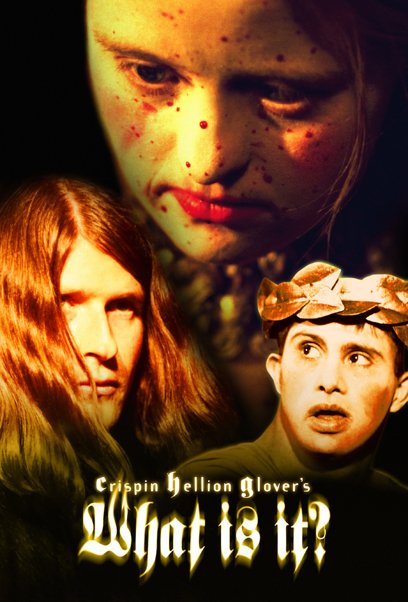
2005年/アメリカ/72min
監督・脚本・出演：クリスピン・グローヴァー
出演：マイケル・ブリービス、リッキー・ウィットマン
世間一般の主流ではない視点から世界を見つめるクリスピン・グローヴァーの“IT”トリロジー3部作の第1作。ダウン症の人々とカタツムリのダークなファンタジー冒険劇。グローヴァー自身も全てを裏で操る“神”の役で出演。ハリウッド1のエキセントリック俳優といわれるグローヴァーの湧き溢れる妄想が炸裂した過剰な監督デビュー作。
9/25(日) 18:30〜
Q&A、サイン会開催
本宮映画劇場田村修司館主の語りとピンク映画いい場面コレクション
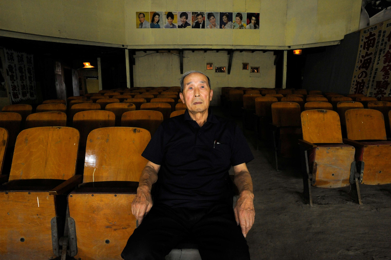
©都築響一
約50年前のピンク映画のいい場面を田村館主が編集したコレクションの上映（40分間）とトーク（40分間）。本宮映画劇場で発掘された幻のピンク映画『好色日本性豪夜話』を上映。
9/19(日) 12:05〜
詳しくはスケジュールをご覧ください
ピンク映画いい場面コレクション2016
2016年/日本/40min
約50年前の独立系プロダクションによって作られた、ピンク映画のいい場面を繋いだコレクション。伝説的な作品を残した関孝二監督のあの映画など幻のフィルムからのいい場面集。
好色日本性豪夜話
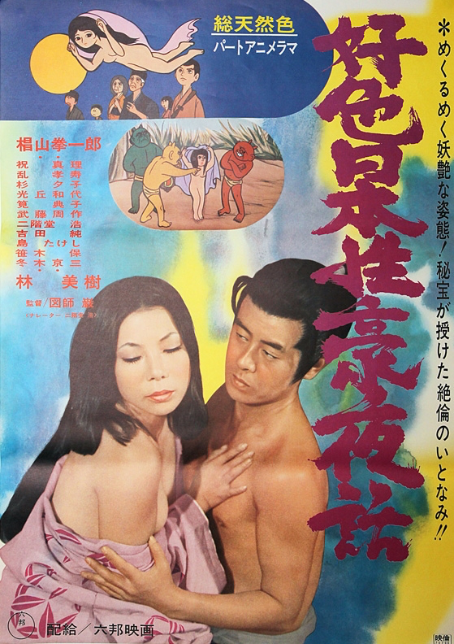
1971年/日本
監督：頭師巌
出演：林美樹、祝真理、椙山拳一郎、杉夕子
アニメ史上もっとも謎に包まれていると言われる幻の映画。今回45年ぶりに上映。
LIP'Sプレゼンツパフォーマンス上映 ロッキー・ホラー・ショー
カナザワ映画祭史上最多動員を記録した前回上映から早3年。都ホールが再びバラ色に染まる時がやってきた！ 今回もロッキー・ホラー・ショーファンクラブLIP’Sが初体験の皆さんをグイグイ優しくリードします！
LIP'SのFBページwww.facebook.com/rhps.lips
ロッキー・ホラー・ショーTHE ROCKY HORROR PICTURE SHOW
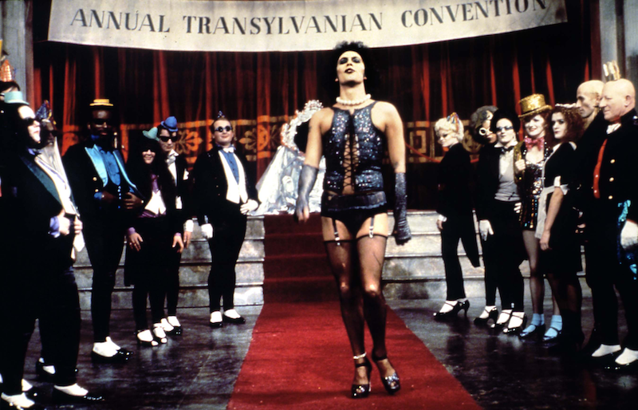
©HOLLYWOOD CLASSICS, ©20TH CENTURY FOX
1975年/イギリス/100min
監督･脚本：ジム･シャーマン
出演：ティム･カリー、スーザン･サランドン、ミート･ローフ、リチャード･オブライエン
カルト映画のクラシック。観客のこの映画に対する支持は絶大で、常に世界中のどこかで上映されているほどだ。現在までの興行収入は製作費の軽く100倍を稼ぎ出している。ある古城を訪ねたカップルが巻き込まれる奇怪な体験をロック･ミュージカルとして描いているが、この作品はただ見ても仕方がない、参加して体験せよ！
カランバ
いま見なければ、生涯見られない
カランバDolce e selvaggio
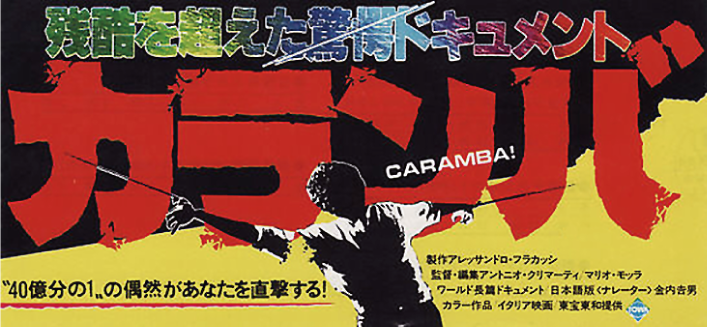
1983年/イタリア/93min
監督:マリオ･モッラ、アントニオ･クリマティ
新聞やテレビでは報じられない残酷な場面のみで構成された驚愕のドキュメンタリー。ジープにゲリラの両腕をくくりつけ、腕を引きちぎる処刑を記録した中東での映像はあまりにショッキングなため、ヨーロッパ各国で上映禁止となった。その他にはヒマラヤ奥地での鳥葬の儀式、プエルトリコでの高層ビルの間を綱渡り中失敗し地面に叩きつけられる瞬間などを記録。カナザワ映画祭オールタイム・ベスト第八位作品！
その他上映作品
ウォーターパワー アブノーマルスペシャル:エネマ版Water Power:Enema Cut Version
ウォーターパワー アブノーマルスペシャル:エネマ版
Water Power:Enema Cut Version
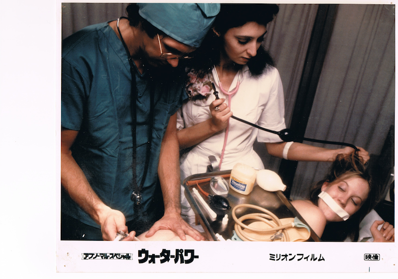
1976年/アメリカ/66min
監督：ショーン・コステロ
出演：ジェイミー･ギリス、Ｃ･Ｊ･ラング
「浣腸には重大な責任が伴う。売女どもを浄化してやる」義憤に駆られた無職男が腐った街ニューヨークを浄化すべく、女たちを襲撃し次々と浣腸する。カナザワ映画祭オールタイム・ベスト第1位作品（同率1位に「ビッグ・スライドショウ」）。また日本公開時には蓮實重彦元東大総長もその年の外国映画ベスト10の中に入れたほどの傑作だ。2012年に当映画祭で上映されたバージョンよりも6分間長いエネマ版を今回特別上映する。
ハッピーアイランド
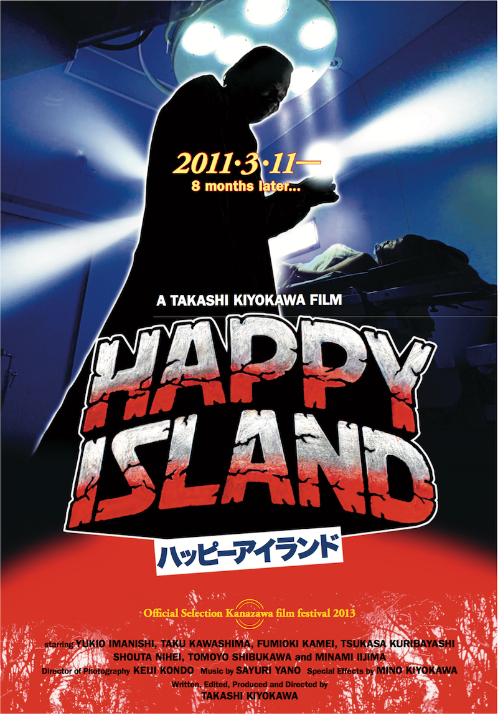
2013年/日本/77min
監督･脚本:清川隆
出演:今西由紀夫、亀井史興、川島拓
日本の辺境に潜入した、雑誌の取材班は思いもよらない恐怖に遭遇する。本職が医師である清川監督ならではの医療器具を使った拷問場面は日本の商業映画では不可能な容赦なさ。カナザワ映画祭2013「期待の新人監督賞」作品を待望のアンコール上映！！
AKIRA

©1988マッシュルーム／アキラ製作委員会
1988年/日本/124min
原作・監督・脚本：大友克洋
音楽：芸能山城組
2020年の東京オリンピックを目前にしたネオ東京を舞台に、暴走族の抗争、暴徒化するデモ、軍の暴走を描いた破壊のスペクタクル。製作から既に30年近くが経ち東京オリンピックまであと数年となった今こそ観るべき映画。爆音上映で浴びせる！
ゼイリブThey Live
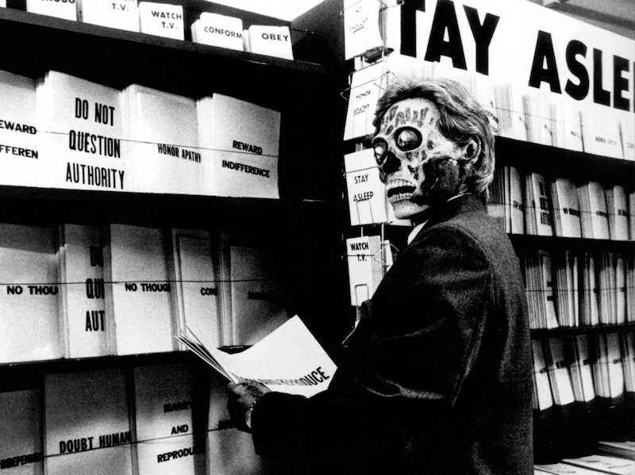
1988年/アメリカ/93min
監督･音楽：ジョン･カーペンター
出演：ロディ･パイパー、キース･デヴィッド
世界は奴らに支配されている。社会の中枢を牛耳り一般大衆を手なずけ搾取する奴ら。その正体を暴くサングラスを手に入れたホームレスが革命を起こす。「奴らを全員殺せ！」この作品で描かれたことはすでに今、現実のものとなっている。
ソドムの市Salò o le 120 giornate di Sodoma
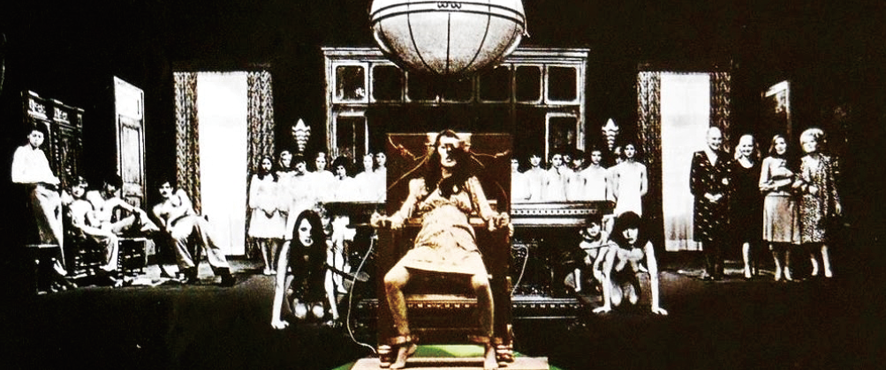
1975年/イタリア/116min
監督･脚本：ピエル･パオロ･パゾリーニ
原作：マルキ･ド･サド
音楽：エンニオ･モリコーネ
出演：パオロ･ボナチェッリ、ジョルジオ･カタルディ
ナチ占領下イタリア、ファシストの館で繰り広げられる変態行為の狂宴を執拗に描く。監督のパゾリーニは出演者の少年に惨殺され、本作が遺作となった。
意志の勝利Triumph des Willens
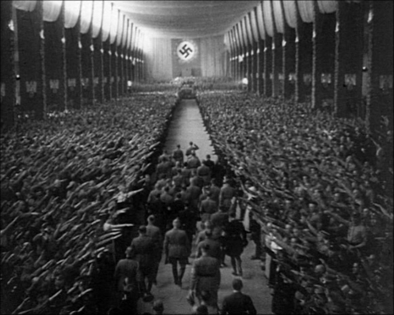
1935年/ドイツ/111min
監督：レニ･リーフェンシュタール
出演：アドルフ･ヒトラー、ルドルフ･ヘス、ヨゼフ･ゲッペルス、ハインリヒ･ヒムラ－
ヨーロッパを破滅の危機に追い込んだナチス政権によるドイツ第三帝国のプロパガンダ映画。その悪魔的な魅力は当時の民衆を熱狂させ、ナチスの勢いを加速させた。
炎628Idi i smotri
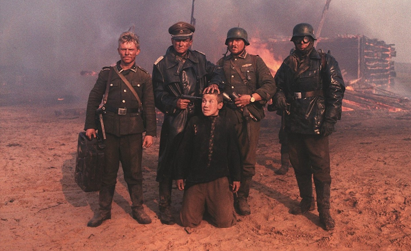
1985年/ソ連/143min
監督･脚本：エレム･クリモフ
原作･脚本：アレシ･アダモーヴィチ
出演：アリョーシャ･クラフチェンコ、オリガ･ミローノワ
ナチス・ドイツに侵略されたロシアを舞台に、パルチザンの少年の目を通して、ナチスによる暴虐を強烈に描く。神経をかきむしる効果音や不協和音が爆音上映で増幅される。独ソ戦の非情さをロシア側から描いた本作には、当時実際に家を焼かれた人々がエキストラとして出演している。